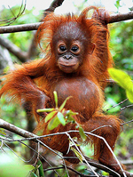
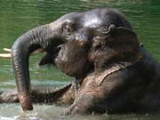

Indonesië
De route
- Dag 1: Amsterdam - Medan
Onze reis zal beginnen met een lange vlucht vanuit Amsterdam naar Medan. Tijdens deze reis zal er een overstap gemaakt worden in Maleisië. De gehele vlucht zal ongeveer 14 uur duren.

- Dag 2: Medan - Bohorok
We worden door een chauffeur afgehaald waarna we direct doorrijden via de bergen naar het rustige dorpje Bohorok zodat we in de middag al midden in de natuur zitten. Hier bevindt zich het opvangcentrum voor de orang-oetans, Bukit Lawang en het Nationaal Park Gunung Leuser. we kunnen dan alvast een korte wandeling maken of heerlijk bijkomen van de lange reis op een terrasje langs de stromende rivier.
- Dag 3: Bohorok, Bukit Lawang - Jungletrek
In de ochtend gaan we onder begeleiding van een lokale gids een wandeling van ca. drie uur door de dichtbegroeide jungle maken. Onderweg brengen we een bezoek aan het rehabilitatiecentrum voor orang-
oetans.
In de middag hebben we een vrij programma. We kunnen de omgeving op eigen gelegenheid verkennen of gaan tuben: de
rivier afdalen met autobanden!
- Dag 4: Bohorok - Tangkahan
Na het ontbijt worden we door een chauffeur naar Tangkahan gebracht. De rest van de dag is ter vrije besteding.

- Dag 5: Tangkahan
Vandaag gaan we de olifanten in dit Nationale Park ontmoeten en maken we een ritje van een uur.
We kunnen er voor kiezen om een langere excursie te volgen waarbij we een 3 tot 4 uur durende jungletrek, een
olifantenrit, het bad- en wasritueel meemaken en we kunnen tuben over de rivier.
- Dag 6: Tangkahan - Berestagi
Vandaag reizen we verder naar Berastagi. Het dorpje dat tijdens de koloniale tijd al een geliefd vakantie oord was bij de Nederlanders, ligt op ca. 1300 meter hoogte op de Karo-hoogvlakte, een vruchtbare streek waar groente en fruit wordt verbouwd. Deze hoogvlakte ligt tussen twee
indrukwekkende vulkanen, de Sinabung en de Sibayak.